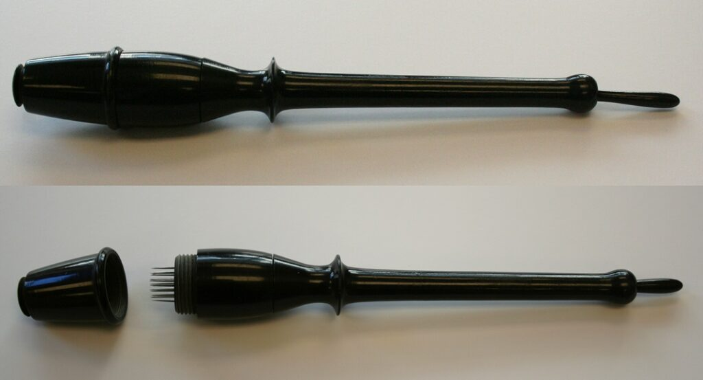
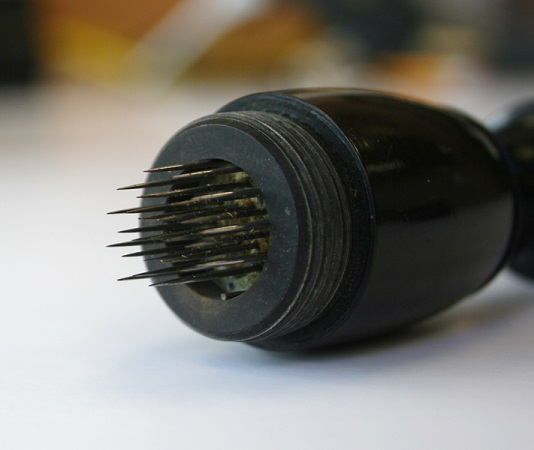
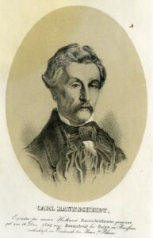

Another installment in our blog series that explores artifacts related to health practices now considered inaccurate or fraudulent. Check out Carl Baunscheidt’s Lebenswecker.
Baunscheidt’s Lebenswecker, circa 1850. Instrument pictured with cap on and off. Item 436, UCSF Archives Artifact Collection.
The Lebenswecker, translated as the “Life-Awakener” or the “Resuscitator,” was developed by German inventor Carl Baunscheidt in the mid-19th century. The small instrument included over 30 thin, spring-loaded needles concentrated at the end of an ebony staff.
Detail of Lebenswecker. Item 436, UCSF Archives Artifact Collection.
According to Baunscheidt, the Lebenswecker was designed to quickly puncture the skin, creating “artificial pores.” The “pores,” i.e. puncture wounds, were then covered with a proprietary irritating oil called “Oleum Baunscheidtii” that produced blisters. As another option, the practitioner could dip the needles in the oil before application, thus creating a more concentrated injection. As the blisters formed and drained, Baunscheidt claimed, the “health-destroying morbid matter” in the body naturally escaped.
Baunscheidt developed a health philosophy around the Lebenswecker known as Baunscheidtism. His inspiration, as detailed in his book Baunscheidtism, or a New Method of Cure, came from his experience watching mosquitoes bite his rheumatic hand. As he writes, “it seemed as if the pains he had suffered, had fled with the flies…the inflicted sting caused an opening in the epidermis just large enough for the fine, volatile, but pathogenic substances lodged in the skin to exude.”
Baunscheidt claimed that the Lebenswecker could cure everything from sleeplessness to measles to epilepsy. Baunscheidtism practitioners, like John Linden, made similarly broad claims. As Linden noted in his work, Manual of the Exanthematic Method of Cure, the Lebenswecker could eliminate a tapeworm because, after repeated applications, “the unwelcome guest will soon become disgusted with his quarters, and be compelled to vacate.”
Baunscheidt’s philosophy, backed by personal testimonies included in his publications, achieved a measure of popularity in the 19th and early 20th century, especially in Germany and the United States. Today, his treatment is widely discredited.

Two different designs of Lebenswecker. Items 436 and 242, UCSF Archives Artifact Collection.
We house two different “Life-Awakeners” in the UCSF Archives and Special Collections and a similar instrument developed by Baunscheidt called an artificial leech. Please contact us if you would like to come in and see the artifacts! We also have editions of John Linden and Carl Baunscheidt’s writings or you can read Baunscheidtism, or a New Method of Cure online in our digital collection.


{kind=link}
{kind=link}
{kind=link}
{kind=link}
{kind=link}